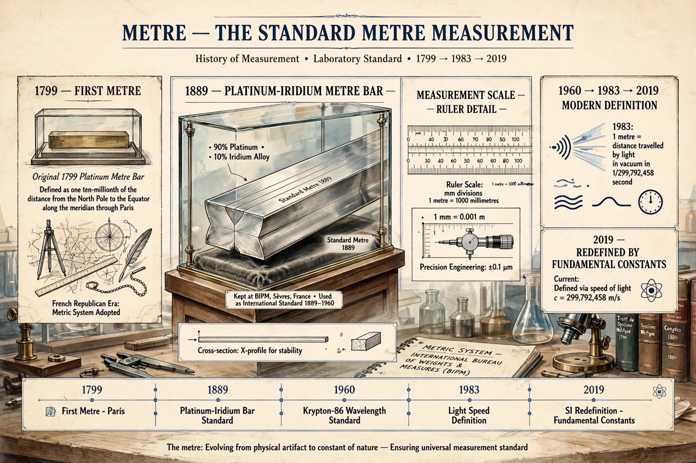

The metre (symbol m; spelled meter in American English) is the base unit of length in the International System of Units (SI).

MetreSince 1983 the metre is defined as the length of the path travelled by light in vacuum during 1/299,792,458 of a second, fixing the speed of light at exactly 299,792,458 m/s. The 2019 SI revision retained this basis via fundamental constants.
Proposed during the French Revolution as one ten-millionth of the distance from equator to North Pole, embodied in a platinum bar (1799) and later a platinum-iridium International Prototype (1889), then redefined in 1960 using krypton-86 wavelengths. See SI, Speed of light.
Common units: millimetre, centimetre, kilometre; also micrometre and nanometre for small scales.